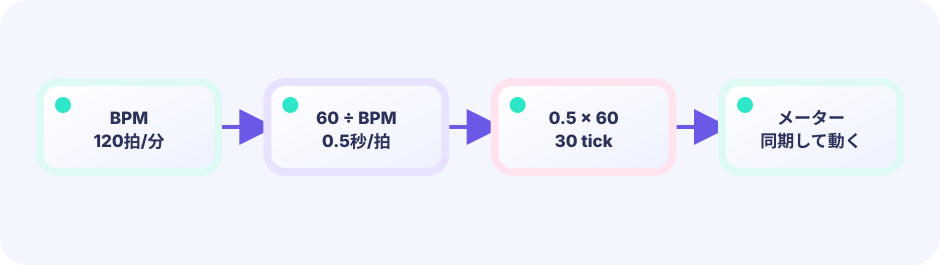
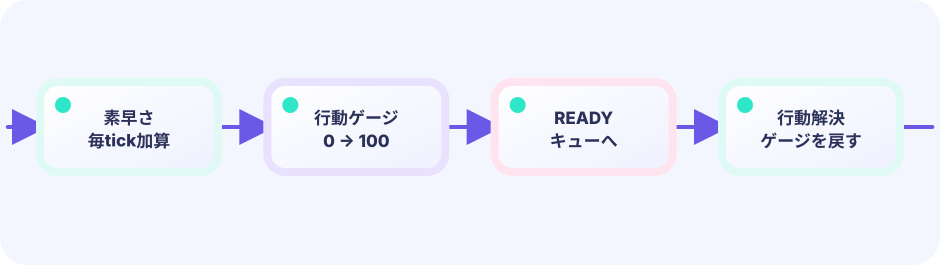

STATE
3人のゲージを同時に進め、素早さの差が行動回数の差になる様子を観察します。
★★★★☆ / PLAYABLE
3人のゲージを同時に進め、素早さの差が行動回数の差になる様子を観察します。


PLAY FIRST
3人のゲージを同時に進め、素早さの差が行動回数の差になる様子を観察します。
DEEP DIVE
Updateのたびにgaugeへspeedを足します。満タンになった役だけ0へ戻すと、速い役は同じ時間に何度もREADYになります。
3人のゲージを同時に進め、素早さの差が行動回数の差になる様子を観察します。
Updateのたびにgaugeへspeedを足します。満タンになった役だけ0へ戻すと、速い役は同じ時間に何度もREADYになります。
数字の変化が次の判断へどうつながるか見ます。
SYSTEM LAB
Updateのたびにgaugeへspeedを足します。満タンになった役だけ0へ戻すと、速い役は同じ時間に何度もREADYになります。
START
UPDATE と DRAW の境界
キー・タッチを読み、位置・HP・ゲージ・タイマー・盤面を変えます。判定やキュー操作もこちらです。
入力 → ルール → game を更新できあがった game の値を読んで、絵・文字・エフェクトを置きます。game の値は変えません。
game を読む → ピクセルへ投影このページのルールは Update 側（または Update が呼ぶ純粋な関数）へ置き、Draw はその結果を表示するだけにします。
GO + EBITENGINE
3人のゲージを同時に進め、素早さの差が行動回数の差になる様子を観察します。
actor.gauge += actor.speed
if actor.gauge >= maxGauge {
actor.gauge = 0
actor.ready = true
}Updateのたびにgaugeへspeedを足します。満タンになった役だけ0へ戻すと、速い役は同じ時間に何度もREADYになります。
速さや行動時間を変えて比べます。
新しい役割を一つ追加しよう。
FEEDBACK